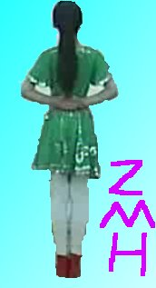

2011-2012 第二学期八年级图像处理教学设计
作者：TeliuTe 来源：基础教程网
十六、学会抓图和抠图 返回目录 下一课
（一）教学设计
1、学习目标：学会抓图和抠图
2、注意事项：按步骤操作思路清晰
3、教学过程：
1）教师准备学案和板书；
2）学生整队进入，开机抄黑板上笔记；
3）教师讲解板书演示操作；
4）学生打指法、日志、完成操作；
5）教师打勾记录学生指法成绩，检查日志和操作；
注：学生抄完笔记就开始打指法、日志，老师讲完后再继续完成；
（二）板书设计(学生笔记)
第16课 学会抓图和抠图
1. 打开gimp，打开舞蹈视频，暂停
2.回到gimp，“文件”、创建、屏幕截图、捕捉+
3.框选，“图像”、裁剪，放大镜
4.剪刀，点选，闭合(封闭)，调整，单击选区
5.“选择”、反转，“编辑”、清除，加背景、签名
操作图示：

（三）课后记
早上弄一个手机卡，折腾半天也还是请插入磁盘
准备去买个新的，这下可以耽误时间，课间把课备好
--
单独抓图太简单了，加上抠图又有些难
操作步骤多，容易绕不过弯来
--
黑板上写了不认真看，想着靠演示的时候
或者问别的同学，结果卡住了就
--
一堆近视的看不清黑板上的字，可是又记不了那么多步骤
问的时候就让看黑板，问做到哪一步了，接着往下做
--
先打开火狐，然后打开gimp，有的习惯先开gimp
然后火狐被挡着，不会找了，光去点最小化，结果火狐又找不着了
--
抓上图以后，又把图片里的工具箱跟gimp程序的工具箱弄混
让把用完的火狐关闭，这样可以减少干扰
--
讲的太快的话，有的学生就会转不过弯来
太慢的话，又有着急思想跑毛，把关键的地方强调几遍
--
抓图的时候，指针会变成十字架，这时候就可以抓图
说“闭合”好多转不过弯，说封闭可能会好些
--
单击转换成选区，有的就点右键了
讲的时候问一下，对着黑板过一遍再做一遍
--
讲一遍，看一遍，做一遍，写一遍
这样下来应该可以学会了，每一遍都要突破模糊的难点
--
选择里的反转，看不出效果，要接着做才行
举了个下棋看三步，到下一步才能看到效果
--
菜单用引号引起来，以前是用横线占地方
改用顿号，意思不明显，再看效果
--
卡住了就乱喊，不用太操心着急着训
过一会自己会接着做，指导一下就可以，不做也不会乱吵
--
返回目录 下一课
本教程由86团学校TeliuTe制作|著作权所有
基础教程网：http://teliute.org/
美丽的校园……
转载和引用本站内容，请保留作者和本站链接。